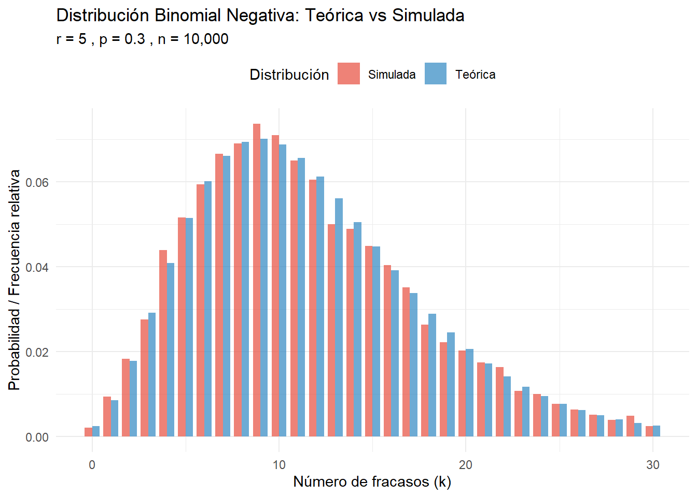
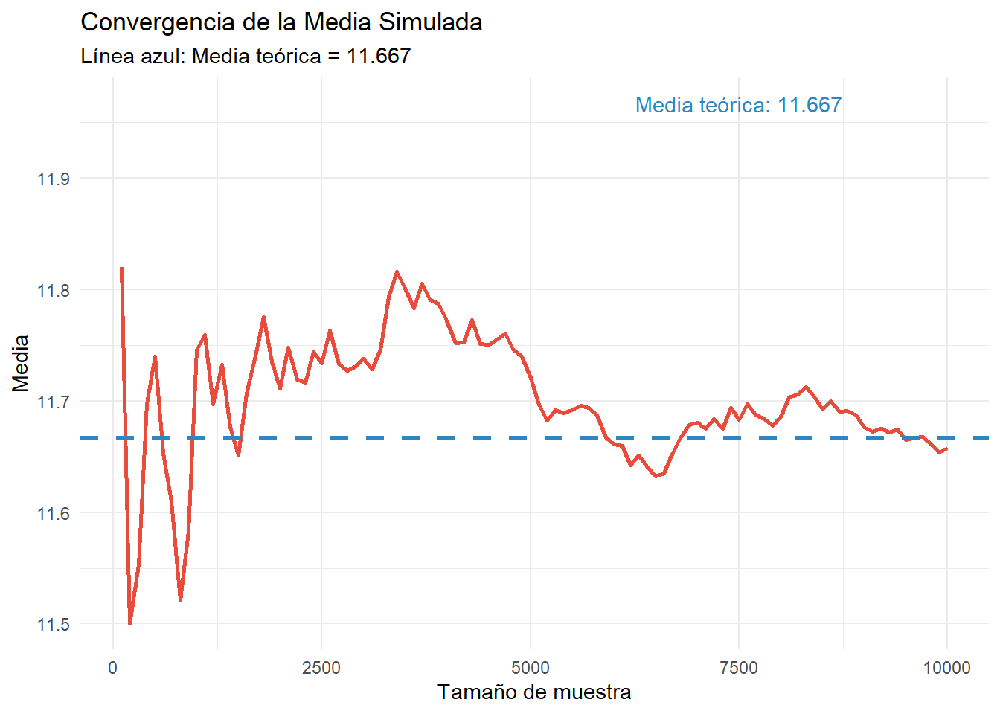
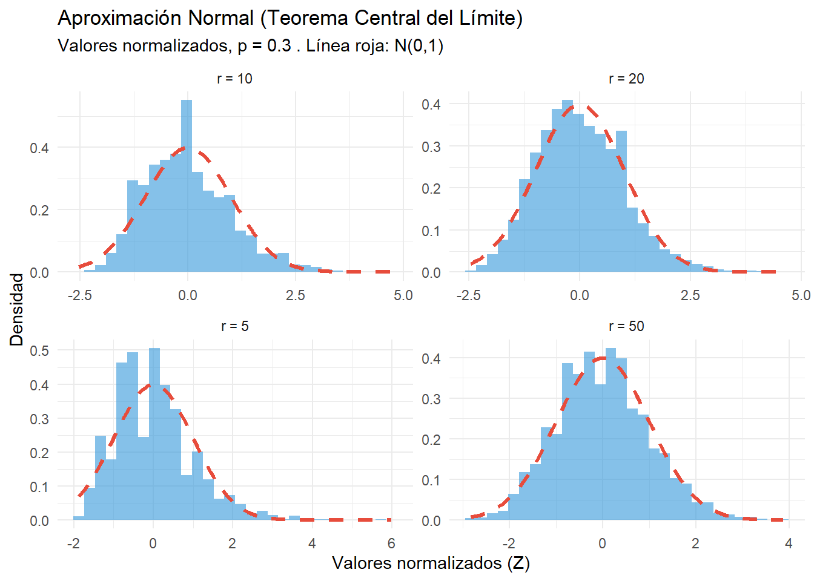
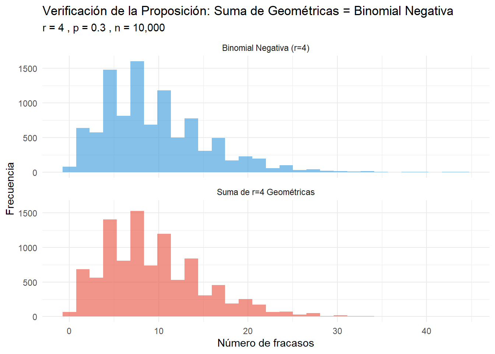
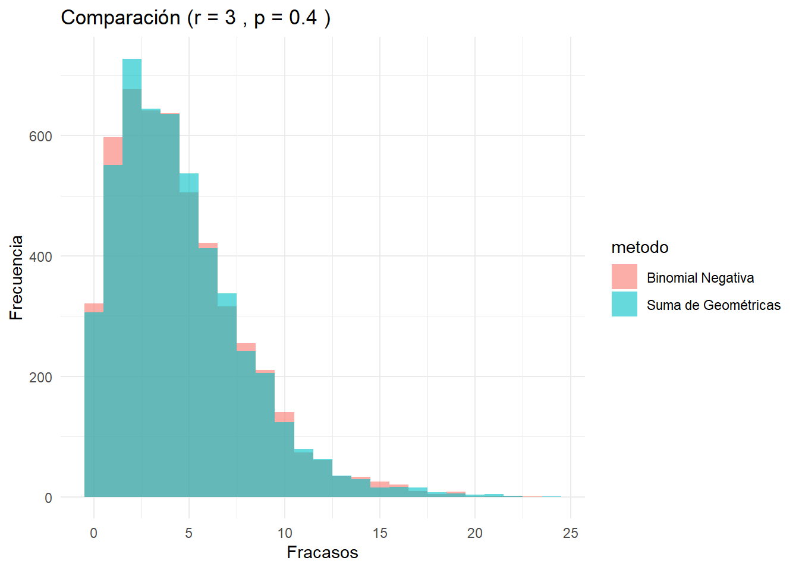

La distribución binomial negativa modela el número de fracasos que ocurren antes de obtener exactamente \(r\) éxitos en una sucesión de ensayos independientes de Bernoulli, donde cada ensayo tiene una probabilidad constante \(p\) de éxito.
Definición 4.1 Si \(X\) es una variable aleatoria que sigue una distribución binomial negativa, entonces \(X\) representa el número de fracasos antes de obtener el \(r\)-ésimo éxito. La función probabilidad está dada por:
\[f(x) = \binom{r + x - 1}{x} p^r (1-p)^x\]
donde \(x = 0, 1, 2, 3, \ldots\) representa el número de fracasos. Una variable aleatoria con esta distribución se denota como: \(X \sim \text{BinNeg}(r, p)\)
4.1 Características
Parámetros
La distribución binomial negativa tiene dos parámetros:
\(r\): Número de éxitos deseados (entero positivo, \(r \geq 1\))
\(p\): Probabilidad de éxito en cada ensayo (\(0 < p \leq 1\))
Un estudiante está practicando tiros libres de baloncesto. Su probabilidad de anotar es \(p = 0.6\). ¿Cuál es la probabilidad de que falle exactamente 3 tiros antes de anotar su segundo tiro libre?
Parámetros:
\(r = 2\) (queremos el segundo éxito)
\(p = 0.6\) (probabilidad de éxito)
\(k = 3\) (número de fracasos)
Cálculo:
Código
# Parámetrosr <-2p <-0.6k <-3# Cálculo de la probabilidadprob <-choose(k + r -1, k) * (p^r) * ((1-p)^k)cat("P(X = 3) =", round(prob, 4))
4.3.1 Efecto del parámetro \(r\) (número de éxitos)
Código
# Valores de k para graficark_vals <-0:20# Diferentes valores de r, p fijor_values <-c(1, 2, 5, 10)p_fixed <-0.4# Crear data frame para ggplotdata_r <-expand.grid(k = k_vals, r = r_values)data_r$p <- p_fixeddata_r$prob <-dnbinom(data_r$k, size = data_r$r, prob = data_r$p)data_r$r <-factor(data_r$r, labels =paste("r =", r_values))# Gráficoplot_r <-ggplot(data_r, aes(x = k, y = prob, fill = r)) +geom_col(position ="dodge", alpha =0.7) +scale_x_continuous(breaks = k_vals) +labs(title ="Efecto del parámetro r (p = 0.4 fijo)",x ="Número de fracasos (k)",y ="Probabilidad",fill ="Parámetro r") +theme_minimal() +scale_fill_brewer(type ="qual", palette ="Set1")ggplotly(plot_r)
Efecto del parámetro r en la distribución binomial negativa
4.3.2 Efecto del parámetro \(p\) (probabilidad de éxito)
Código
# Diferentes valores de p, r fijop_values <-c(0.2, 0.4, 0.6, 0.8)r_fixed <-3# Crear data frame para ggplotdata_p <-expand.grid(k = k_vals, p = p_values)data_p$r <- r_fixeddata_p$prob <-dnbinom(data_p$k, size = data_p$r, prob = data_p$p)data_p$p <-factor(data_p$p, labels =paste("p =", p_values))# Gráficoplot_p <-ggplot(data_p, aes(x = k, y = prob, fill = p)) +geom_col(position ="dodge", alpha =0.7) +scale_x_continuous(breaks = k_vals) +labs(title ="Efecto del parámetro p (r = 3 fijo)",x ="Número de fracasos (k)",y ="Probabilidad",fill ="Parámetro p") +theme_minimal() +scale_fill_brewer(type ="qual", palette ="Set2")ggplotly(plot_p)
Efecto del parámetro p en la distribución binomial negativa
4.3.3 Tabla comparativa de parámetros estadísticos
Código
# Crear tabla con diferentes combinaciones de parámetroscombinaciones <-expand.grid(r =c(2, 5, 10),p =c(0.3, 0.5, 0.7))combinaciones$Media <- combinaciones$r * (1- combinaciones$p) / combinaciones$pcombinaciones$Varianza <- combinaciones$r * (1- combinaciones$p) / (combinaciones$p^2)combinaciones$Desv_Std <-sqrt(combinaciones$Varianza)# Redondear para mejor presentacióncombinaciones[3:5] <-round(combinaciones[3:5], 3)kable(combinaciones, caption ="Parámetros estadísticos para diferentes valores de r y p",col.names =c("r", "p", "Media", "Varianza", "Desv. Estándar"))
Parámetros estadísticos para diferentes valores de r y p
r
p
Media
Varianza
Desv. Estándar
2
0.3
4.667
15.556
3.944
5
0.3
11.667
38.889
6.236
10
0.3
23.333
77.778
8.819
2
0.5
2.000
4.000
2.000
5
0.5
5.000
10.000
3.162
10
0.5
10.000
20.000
4.472
2
0.7
0.857
1.224
1.107
5
0.7
2.143
3.061
1.750
10
0.7
4.286
6.122
2.474
4.3.4 Observaciones sobre el efecto de los parámetros
Efecto de\(r\):
Al aumentar \(r\), la distribución se desplaza hacia la derecha (mayor media)
La variabilidad también aumenta
Para \(r = 1\), se obtiene la distribución geométrica
Efecto de\(p\):
Al aumentar \(p\) (mayor probabilidad de éxito), la distribución se concentra más cerca de cero
La media y varianza disminuyen cuando \(p\) aumenta
4.4 Simulación de Valores y Comparación con la Teórica
Consideremos una variable aleatoria \(X \sim \text{BinNeg}(r=5, p=0.3)\). Simularemos 10,000 valores y compararemos las estadísticas obtenidas con las teóricas.
Código
# Parámetros para la simulaciónr <-5p <-0.3n_sim <-10000# Simulación de valoresset.seed(422)valores_simulados <-rnbinom(n_sim, size = r, prob = p)# Estadísticas de la simulaciónmedia_sim <-mean(valores_simulados)var_sim <-var(valores_simulados)sd_sim <-sd(valores_simulados)# Valores teóricosmedia_teorica <- r * (1- p) / pvar_teorica <- r * (1- p) / (p^2)sd_teorica <-sqrt(var_teorica)# Tabla comparativacomparacion <-data.frame( Estadística =c("Media", "Varianza", "Desv. Estándar"), Teórica =c(media_teorica, var_teorica, sd_teorica),Simulada =c(media_sim, var_sim, sd_sim),Diferencia =c(abs(media_teorica - media_sim), abs(var_teorica - var_sim), abs(sd_teorica - sd_sim)))kable(comparacion, digits =4, caption =paste("Comparación teórica vs simulada (r =", r, ", p =", p, ")"))
Comparación teórica vs simulada (r = 5 , p = 0.3 )
Estadística
Teórica
Simulada
Diferencia
Media
11.6667
11.6575
0.0092
Varianza
38.8889
39.7942
0.9053
Desv. Estándar
6.2361
6.3083
0.0722
Visualización
Código
# Rango de valores para comparark_max <-quantile(valores_simulados, 0.99)k_vals <-0:k_max# Probabilidades teóricasprob_teorica <-dnbinom(k_vals, size = r, prob = p)# Frecuencias relativas de la simulaciónfreq_simulada <-table(factor(valores_simulados, levels = k_vals))freq_relativa <-as.numeric(freq_simulada) / n_sim# Crear data frame para ggplotdata_comp <-data.frame(k =rep(k_vals, 2),Probabilidad =c(prob_teorica, freq_relativa),Tipo =rep(c("Teórica", "Simulada"), each =length(k_vals)))# Gráfico de barras comparativoggplot(data_comp, aes(x = k, y = Probabilidad, fill = Tipo)) +geom_col(position ="dodge", alpha =0.7, width =0.8) +labs(title =paste("Distribución Binomial Negativa: Teórica vs Simulada"),subtitle =paste("r =", r, ", p =", p, ", n =", format(n_sim, big.mark =",")),x ="Número de fracasos (k)",y ="Probabilidad / Frecuencia relativa",fill ="Distribución") +theme_minimal() +theme(legend.position ="top") +scale_fill_manual(values =c("Teórica"="#2E86C1", "Simulada"="#E74C3C"))

Comparación entre distribución teórica y simulada
Convergencia de la Simulación
Código
# Diferentes tamaños de muestratamaños <-seq(100, 10000, by =100)medias_acumuladas <-sapply(tamaños, function(n) mean(valores_simulados[1:n]))# Data frame para el gráficodata_conv <-data.frame(n = tamaños,Media_simulada = medias_acumuladas,Media_teorica = media_teorica)# Gráfico de convergenciaggplot(data_conv) +geom_line(aes(x = n, y = Media_simulada), color ="#E74C3C", linewidth =1) +geom_hline(yintercept = media_teorica, color ="#2E86C1", linetype ="dashed", linewidth =1.2) +labs(title ="Convergencia de la Media Simulada",subtitle =paste("Línea azul: Media teórica =", round(media_teorica, 3)),x ="Tamaño de muestra",y ="Media") +theme_minimal() +annotate("text", x =7500, y = media_teorica +0.3, label =paste("Media teórica:", round(media_teorica, 3)), color ="#2E86C1")

Convergencia de la media simulada hacia la teórica
4.5 Aproximación con la Distribución Normal
4.5.1 Fundamento Teórico
Cuando \(r\) es grande, la distribución binomial negativa se puede aproximar a una distribución normal:
Consideramos una variable aleatoria \(X \sim \text{BinNeg}(r, p)\) con \(p = 0.3\) y diferentes valores de \(r\). Simularemos 5000 valores para cada \(r\) y compararemos la distribución simulada con la aproximación normal.
Código
# Parámetros para TCLp <-0.3r_vals <-c(5, 10, 20, 50)n_sim <-5000# Función para crear datos de comparacióncrear_datos <-function(r_val, p_val, n_sim) {# Simulación sim_vals <-rnbinom(n_sim, size = r_val, prob = p_val)# Parámetros teóricos mu <- r_val * (1- p_val) / p_val sigma2 <- r_val * (1- p_val) / (p_val^2) sigma <-sqrt(sigma2)# Normalizar z_vals <- (sim_vals - mu) / sigmareturn(list(originales = sim_vals,normalizados = z_vals,mu = mu,sigma = sigma,r = r_val ))}# Generar datos para cada rdatos <-lapply(r_vals, crear_datos, p_val = p, n_sim = n_sim)# Crear data frame para ggplotdata_graph <-do.call(rbind, lapply(1:length(datos), function(i) {data.frame(valores_norm = datos[[i]]$normalizados,r_valor =paste("r =", datos[[i]]$r) )}))# Gráfico de densidad con aproximación normalggplot(data_graph, aes(x = valores_norm)) +geom_histogram(aes(y =after_stat(density)), alpha =0.6, bins =30, fill ="#3498DB") +stat_function(fun = dnorm, args =list(mean =0, sd =1), color ="#E74C3C", linewidth =1.2, linetype ="dashed") +facet_wrap(~r_valor, scales ="free") +labs(title ="Aproximación Normal (Teorema Central del Límite)",subtitle =paste("Valores normalizados, p =", p, ". Línea roja: N(0,1)"),x ="Valores normalizados (Z)",y ="Densidad") +theme_minimal()

Aproximación normal para diferentes valores de r
4.6 Relación con la Suma de Variables Geométricas
Proposición 4.1 Si \(X_1, X_2, \ldots, X_r\) son variables aleatorias independientes e idénticamente distribuidas con distribución geométrica de parámetro \(p\) (número de fracasos antes del primer éxito), entonces:
Es decir, la suma de \(r\) variables aleatorias geométricas independientes sigue una distribución binomial negativa con parámetros \(r\) y \(p\).
Justificación intuitiva
Cada \(X_i\) cuenta los fracasos antes del \(i\)-ésimo éxito
\(Y = \sum_{i=1}^r X_i\) cuenta el total de fracasos antes de obtener \(r\) éxitos
Esto es exactamente lo que modela la distribución binomial negativa
4.6.1 Verificación por Simulación
Código
# Parámetrosr <-4p <-0.3n_sim <-10000set.seed(42)# Método 1: Generar r variables geométricas y sumarlassuma_geometricas <-replicate(n_sim, { geometricas <-rgeom(r, prob = p) # rgeom en R usa la definición estándarsum(geometricas)})# Método 2: Generar directamente de binomial negativabinomial_negativa <-rnbinom(n_sim, size = r, prob = p)# Comparar estadísticasstats_comparacion <-data.frame( Método =c("Suma de Geométricas", "Binomial Negativa Directa"),Media =c(mean(suma_geometricas), mean(binomial_negativa)),Varianza =c(var(suma_geometricas), var(binomial_negativa)),Desv_Std =c(sd(suma_geometricas), sd(binomial_negativa)),Min =c(min(suma_geometricas), min(binomial_negativa)),Max =c(max(suma_geometricas), max(binomial_negativa)))# Valores teóricosmedia_teorica <- r * (1- p) / pvar_teorica <- r * (1- p) / (p^2)stats_comparacion$Dif_Media_Teorica <-abs(stats_comparacion$Media - media_teorica)stats_comparacion$Dif_Var_Teorica <-abs(stats_comparacion$Varianza - var_teorica)kable(stats_comparacion, digits =4,caption =paste("Verificación de la proposición (r =", r, ", p =", p, ")"))
Verificación de la proposición (r = 4 , p = 0.3 )
Método
Media
Varianza
Desv_Std
Min
Max
Dif_Media_Teorica
Dif_Var_Teorica
Suma de Geométricas
9.3467
31.5279
5.6150
0
44
0.0134
0.4167
Binomial Negativa Directa
9.3219
32.2319
5.6773
0
44
0.0114
1.1208
Código
cat("Valores teóricos:\n")
Valores teóricos:
Código
cat("Media:", round(media_teorica, 4), "\n")
Media: 9.3333
Código
cat("Varianza:", round(var_teorica, 4), "\n")
Varianza: 31.1111
Código
# Crear data frame para comparacióndata_comparacion <-data.frame(valores =c(suma_geometricas, binomial_negativa),metodo =rep(c("Suma de r=4 Geométricas", "Binomial Negativa (r=4)"), each = n_sim))# Histogramas comparativosggplot(data_comparacion, aes(x = valores, fill = metodo)) +geom_histogram(alpha =0.6, bins =30, position ="identity") +facet_wrap(~metodo, ncol =1) +labs(title ="Verificación de la Proposición: Suma de Geométricas = Binomial Negativa",subtitle =paste("r =", r, ", p =", p, ", n =", format(n_sim, big.mark =",")),x ="Número de fracasos",y ="Frecuencia") +theme_minimal() +theme(legend.position ="none") +scale_fill_manual(values =c("#3498DB", "#E74C3C"))

Comparación de histogramas: Suma de geométricas vs Binomial negativa
4.7 Ejercicios Propuestos
Ejercicio 4.1 Implementa una función que tome como parámetros \((r, p, n_{sim})\) y devuelva un gráfico comparativo entre la suma de geométricas y la binomial negativa.
Solución:
Código
comparar_geom_bn <-function(r, p, n_sim) { suma_geom <-replicate(n_sim, sum(rgeom(r, prob = p))) bn_dir <-rnbinom(n_sim, size = r, prob = p) df <-data.frame(valor =c(suma_geom, bn_dir),metodo =rep(c("Suma de Geométricas", "Binomial Negativa"), each = n_sim) )ggplot(df, aes(x = valor, fill = metodo)) +geom_histogram(alpha =0.6, position ="identity", bins =25) +labs(title =paste("Comparación (r =", r, ", p =", p, ")"), x ="Fracasos", y ="Frecuencia") +theme_minimal()}comparar_geom_bn(3, 0.4, 5000)

Ejercicio 4.2 Generar \(k=1000\) muestras de tamaño 50 de una distribución binomial negativa con parámetros \(r\geq 1\) y \(0<p<1\). Verificar el Teorema Central del Límite para las medias muestrales. No confundir con la aproximación a la distribución normal.